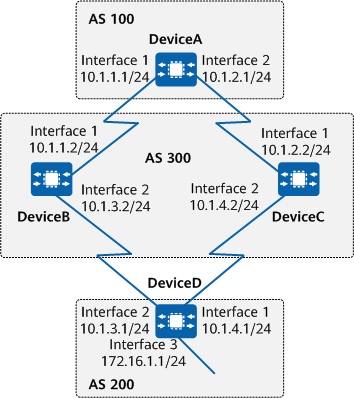

Example for Configuring BGP Load Balancing
Networking Requirements
On the network shown in Figure 1, all devices run BGP. DeviceA resides in AS 100. DeviceB and DeviceC reside in AS 300. DeviceD resides in AS 200. EBGP connections are established between DeviceA and DeviceB, between DeviceA and DeviceC, between DeviceD and DeviceB, and between DeviceD and DeviceC. On DeviceA, there are two BGP routes to 172.16.1.0/24. This means that traffic destined for 172.16.1.0/24 can be forwarded through DeviceB and DeviceC. It is required that BGP load balancing be configured to fully utilize network resources and reduce network congestion.

In this example, interface 1, interface 2, and interface 3 represent 10GE 0/0/1, 10GE 0/0/2, and 10GE 0/0/3, respectively.

To complete the configuration, you need the following data:
Precautions
During the configuration, note the following:
Route load balancing can be implemented by configuring BGP attributes, for example, configuring the device to ignore the comparison of IGP metrics. Ensure that no routing loops occur when configuring BGP attributes to implement load balancing.
- To improve security, you are advised to deploy BGP security measures. For details, see "Configuring BGP Authentication." Keychain authentication is used as an example. For details, see Example for Configuring Keychain Authentication for BGP.
Procedure
- Assign an IP address to each involved interface. For detailed configurations, see Configuration Scripts.
- Configure BGP connections.
# Configure DeviceA.
[DeviceA] bgp 100 [DeviceA-bgp] router-id 1.1.1.1 [DeviceA-bgp] peer 10.1.1.2 as-number 300 [DeviceA-bgp] peer 10.1.2.2 as-number 300 [DeviceA-bgp] quit
# Configure DeviceB.
[DeviceB] bgp 300 [DeviceB-bgp] router-id 2.2.2.2 [DeviceB-bgp] peer 10.1.1.1 as-number 100 [DeviceB-bgp] peer 10.1.3.1 as-number 200 [DeviceB-bgp] quit
# Configure DeviceC.
[DeviceC] bgp 300 [DeviceC-bgp] router-id 3.3.3.3 [DeviceC-bgp] peer 10.1.2.1 as-number 100 [DeviceC-bgp] peer 10.1.4.1 as-number 200 [DeviceC-bgp] quit
# Configure DeviceD.
[DeviceD] bgp 200 [DeviceD-bgp] router-id 4.4.4.4 [DeviceD-bgp] peer 10.1.3.2 as-number 300 [DeviceD-bgp] peer 10.1.4.2 as-number 300 [DeviceD-bgp] ipv4-family unicast [DeviceD-bgp-af-ipv4] network 172.16.1.0 255.255.255.0 [DeviceD-bgp-af-ipv4] quit [DeviceD-bgp] quit
# Check the routing table of DeviceA.
[DeviceA] display bgp routing-table 172.16.1.0 24 BGP local router ID : 1.1.1.1 Local AS number : 100 Paths : 2 available, 1 best, 1 select BGP routing table entry information of 172.16.1.0/24: From: 10.1.1.2 (2.2.2.2) Route Duration: 0d00h00m50s Direct Out-interface:10GE0/0/1 Original nexthop: 10.1.1.2 Qos information : 0x0 AS-path 200 300, origin igp, pref-val 0, valid, external, best, select, pre 255 Advertised to such 2 peers: 10.1.1.2 10.1.2.2 BGP routing table entry information of 172.16.1.0/24: From: 10.1.2.2 (3.3.3.3) Route Duration: 0d00h00m51s Direct Out-interface: 10GE0/0/2 Original nexthop: 10.1.2.2 Qos information : 0x0 AS-path 200 300, origin igp, pref-val 0, valid, external, pre 255, not preferred for router ID Not advertised to any peers yet
The command output shows that there are two valid routes from DeviceA to 172.16.1.0/24. The route with the next-hop IP address of 10.1.1.2 is the optimal route because DeviceB's router ID is smaller.
- Configure load balancing.
# Configure load balancing on DeviceA.
[DeviceA] bgp 100 [DeviceA-bgp] ipv4-family unicast [DeviceA-bgp-af-ipv4] maximum load-balancing 2 [DeviceA-bgp-af-ipv4] quit [DeviceA-bgp] quit
Verifying the Configuration
# Check the routing table of DeviceA.
[DeviceA] display bgp routing-table 172.16.1.0 24 BGP local router ID : 1.1.1.1 Local AS number : 100 Paths : 2 available, 1 best, 2 select BGP routing table entry information of 172.16.1.0/24: From: 10.1.1.2 (2.2.2.2) Route Duration: 0d00h03m55s Direct Out-interface: 10GE0/0/1 Original nexthop: 10.1.1.2 Qos information : 0x0 AS-path 200 300, origin igp, pref-val 0, valid, external, best, select, pre 255 Advertised to such 2 peers 10.1.1.2 10.1.2.2 BGP routing table entry information of 172.16.1.0/24: From: 10.1.2.2 (3.3.3.3) Route Duration: 0d00h03m56s Direct Out-interface: 10GE0/0/2 Original nexthop: 10.1.2.2 Qos information : 0x0 AS-path 200 300, origin igp, pref-val 0, valid, external, select, pre 255, not preferred for router ID Not advertised to any peers yet
The preceding command output shows that a BGP route to 172.16.1.0/24 contains two next-hop IP addresses: 10.1.1.2 and 10.1.2.2.
Configuration Scripts
-
# sysname DeviceA # interface 10GE0/0/1 ip address 10.1.1.1 255.255.255.0 # interface 10GE0/0/2 ip address 10.1.2.1 255.255.255.0 # bgp 100 router-id 1.1.1.1 peer 10.1.1.2 as-number 300 peer 10.1.2.2 as-number 300 # ipv4-family unicast maximum load-balancing 2 peer 10.1.1.2 enable peer 10.1.2.2 enable # return
-
# sysname DeviceB # interface 10GE0/0/1 ip address 10.1.1.2 255.255.255.0 # interface 10GE0/0/2 ip address 10.1.3.2 255.255.255.0 # bgp 300 router-id 2.2.2.2 peer 10.1.1.1 as-number 100 peer 10.1.3.1 as-number 200 # ipv4-family unicast peer 10.1.1.1 enable peer 10.1.3.1 enable # return
-
# sysname DeviceC # interface 10GE0/0/1 ip address 10.1.4.2 255.255.255.0 # interface 10GE0/0/2 ip address 10.1.2.2 255.255.255.0 # bgp 300 router-id 3.3.3.3 peer 10.1.2.1 as-number 100 peer 10.1.4.1 as-number 200 # ipv4-family unicast peer 10.1.2.1 enable peer 10.1.4.1 enable # return
-
# sysname DeviceD # interface 10GE0/0/1 ip address 10.1.4.1 255.255.255.0 # interface 10GE0/0/2 ip address 10.1.3.1 255.255.255.0 # interface 10GE0/0/3 undo portswitch ip address 172.16.1.1 255.255.255.0 # bgp 200 router-id 4.4.4.4 peer 10.1.3.2 as-number 300 peer 10.1.4.2 as-number 300 # ipv4-family unicast network 172.16.1.0 255.255.255.0 peer 10.1.3.2 enable peer 10.1.4.2 enable # return